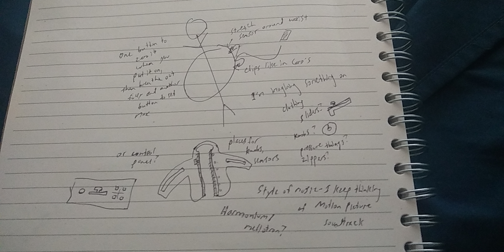

Basically I've been obsessed with this notion of "breath". It's a kind of omnipresent concept in music -- obviously wind instruments utilize breath, but it is also built into music notation in the form of breath marks.
Of course, breath is important in anything we do, not just music and instrumentation. Hot topics like meditation depend heavily on the awareness of one's own breath. Controlling our breathing, slowing it down, helps us relax. And if we're all in quarantine, we might as well be breathing anyway.
I had seen this project online a while back, and now that I'm thinking about these things it immediately came back to mind. Basically, I'm wondering if I can take the concept that Caro uses here and apply it to instrumentation. In my mind's eye, I'm imagining something that is controlled by your breathing in and out, combined with a control panel with a series of buttons or sliders. My first instinct, since this would be something that wraps around your torso, is to have some sort of wearable with the control panel attached to it, like a jacket, which would look super cool and make it very portable... but I really don't have much experience with wearables. The other option is to have a more traditional control panel. I'll have to play around with things to see which works.
I think a hard part will be finding a stretch sensor that does what I need it to do. This instructable looks potentially handy, since the stretch sensors from Adafruit look like they're out of stock. I'm worried it wouldn't be very precise, as well.
Comments? Questions? Concerns? Email me here!